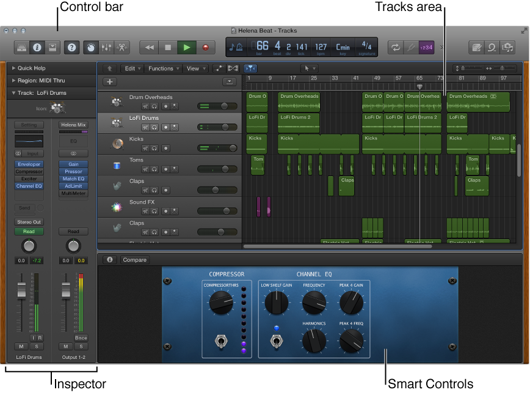
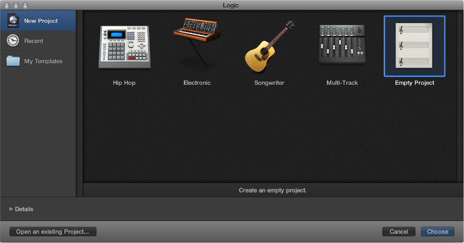

Open Logic Pro
Do one of the following:
- Click the Launchpad icon in the Dock, then click the Logic Pro icon in Launchpad.
- Double-click the Logic Pro icon in the Applications folder.
The first time you open Logic Pro, it downloads basic content, including software instrument presets and Apple Loops, that you can use in your projects.
After the download is complete, the Project Chooser opens so you can create a new project or open an existing one. To learn more about creating and opening projects, see Get started with projects.
Tip: If you’re using Logic Pro on a portable computer or with a smaller display, you can hide the Dock to maximize available screen space. To hide the Dock, Control-click the area in the Dock between the last application icon and the Downloads icon, then choose Turn Hiding On from the shortcut menu.
Logic Pro main window
The Logic Pro main window is where you work on your projects. You can access all of the major working areas of Logic Pro in the main window.
Figure. Logic Pro main window with main working areas. The central part of the main window is the Tracks area. You record and arrange the musical material in your project on the tracks in the Tracks area. There are several different track types, including audio, software instrument, and Drummer tracks. When you make a recording, or add an Apple Loop or other media file, it appears as a rectangular region on the selected track.
Across the top of the main window is the control bar, which includes buttons that let you access different parts of Logic Pro, transport controls for controlling project playback, a Master Volume slider to adjust the overall project volume, and other controls. In the center of the control bar is the LCD, where you can view the current playhead position, move the playhead, and set the project tempo, key, and time signature. To start working with audio tracks, see Get started with audio tracks. To start working with software instrument tracks, see Get started with software instrument tracks. To start working with your recordings and other material in the Tracks area, see Get started arranging regions in the Tracks area.
Open project
Create a project from a template Choose File > New from Template to open the Project Chooser.
In the Project Chooser, click New Project on the left, then double-click a template on the right.
Figure. The Project Chooser, with an Empty Project template selected. The project opens. If you choose Empty Project, the New Tracks dialog appears so you can add a track.
Playback and navigation
You can play back the project at any time to hear your latest changes. You control playback and navigate the project using the playhead, the ruler, and the transport buttons, located in the control bar.
The playhead extends from the top to the bottom of the Tracks area, and moves as the project plays, showing the currently playing point in the project. At the top of the playhead is a triangle that you can drag to move the playhead to a different time position, or scrub the project by moving the playhead across the Tracks area to quickly locate a particular musical passage.
Tempo, key, and time signature
Each project has a set of properties, including tempo, key signature, and time signature. For new projects, the default project tempo is 120 beats per minute (bpm), the key is C, and the time signature is 4/4. You can change these project properties when you create a project, or later while you’re working. The project tempo, key, and time signature are displayed in the LCD in the center of the control bar, along with the current playhead position.

Tempo
The project tempo defines the musical speed of the project, expressed as the number of beats per minute (bpm). Changing the tempo can affect the playback speed of audio and software instrument recordings, Drummer regions, and Apple Loops, in the project.
Key
The project key defines the central note (called the tonic), and whether the project uses the major or minor scale. Changing the key affects the playback of Apple Loops in the project, and the display of MIDI notes in the Score Editor.
Time signature
The project time signature defines how musical time is divided into measures and beats. The time signature contains two numbers separated by a slash (/), which looks similar to a fraction. The first number controls the number of beats in each bar, and the second number controls the beat value (the note that counts as one beat). Changing the time signature does not affect playback, but does affect the units displayed in the ruler and the bars in the Score Editor.
Audio tracks
You can record sound from a microphone, or from an electric instrument (such as an electric guitar) connected to your computer, on an audio track in the Tracks area. The recording appears as an audio region on the selected audio track, showing an audio waveform. You can arrange and edit audio regions in the Tracks area, and edit them in a close-up view in the Audio Track Editor.
When you add a track, you can choose a patch for the track in the Library. You can quickly audition patches to find the one you want to use, and change the effects for an audio track by choosing a different patch. Each audio patch contains one or more audio effects, and can include sends and other routing settings.
Logic Pro includes a metronome, which plays a steady beat to help you play in time while recording. You can have the metronome play as you record, or only play a one-bar count-in before recording starts.

Software instrument tracks
If you have a USB or MIDI keyboard (or another type of MIDI controller) connected to your computer, you can play and record software instruments. Logic Pro features a complete library of professional-quality software instruments, including synthesizers and other keyboards, guitars, drums, world instruments, and more.
A patch contains the instrument, effects, and routing settings that control the sound of the track. You can change the sound of a software instrument track by choosing a different patch from the Library. In the Library, you can also audition patches to find the one you want to use.
You record a software instrument on a software instrument track in the Tracks area. The recording appears as a MIDI region on the selected software instrument track. You can arrange MIDI regions in the Tracks area, and edit them in the Piano Roll Editor and other editors.
Logic Pro includes a metronome, which plays a steady beat to help you play in time while recording. You can have the metronome play as you record, or play only a one-bar count-in before recording starts.

Arranging regions
The Tracks area is where you arrange the recordings, Apple Loops, and other musical material in your project, organizing them into sections such as intro, verse, and chorus to build an arrangement. The Tracks area shows a visual representation of time moving from left to right. You build a project by arranging regions in rows called tracks, that run horizontally across the Tracks area.
Regions are the building blocks of a project, representing your recordings, Apple Loops, and other media files you add to the project. Regions appear as rounded rectangles in the Tracks area. There are several different types of regions, depending on the track type. The two primary region types are audio regions, which show the audio waveform, and MIDI regions, which show note events as thin rectangles.

You can arrange regions in a variety of ways in the Tracks area, by moving, looping, resizing, splitting, joining, and deleting them. Try following the tasks below, using regions in the project.
Piano Roll Editor
The Piano Roll Editor shows the notes in MIDI regions on a software instrument track as colored bars in a time grid. On the grid, a note’s horizontal position indicates where the note starts playing, while its vertical position indicates its pitch. A keyboard graphic along the left edge of the Piano Roll Editor provides an easy guide to the pitches of notes.

On the left are controls for quantizing the timing and pitch of MIDI notes, and editing their velocity. Along the top of the Piano Roll Editor, a ruler shows time divisions, based on the time format chosen in the LCD. The header shows the name of the selected region, or the number of regions (if more than one is selected), as well as the pitch and position of the pointer in the region.
Audio Track Editor
The Audio Track Editor shows a close-up view of part of an audio track in the Tracks area, displaying the audio waveforms of the regions on the track.
In the Audio Track Editor, you can move and trim, split, and join audio regions, play a region in isolation, and edit regions in other ways. Edits you make in the Audio Track Editor are nondestructive, so you can always return to your original recordings.
You can also quantize and edit the pitch of audio material in the Audio Track Editor using Flex Pitch. When you choose a Flex Pitch algorithm, the contents of the audio track are analyzed for pitch, and the results are displayed as a pitch curve overlaid on the waveform.

Smart Controls
Smart Controls let you quickly adjust the sound of a track, without having to edit channel strip settings or open individual plug-in windows. Each Smart Control includes a set of screen controls that you can adjust to control the sound of the patch. Smart Controls typically include EQ or tone controls, reverb and other effects controls, and controls specific to the type of track or instrument. For example, the Smart Control for a synthesizer might include screen controls for choosing the waveform and adjusting the resonance and filter cutoff, while one for a string instrument might include controls for changing the articulation.

Mixing
Mixing a project involves balancing the different parts of the project and blending them into a cohesive whole. In the Mixer, each track has a channel strip that corresponds to its track type. You can control the sound of the track using its channel strip controls, which include Mute and Solo buttons, a Volume fader and level meter, a Pan/Balance knob, and others. You can also add effects plug-ins, change plug-in settings, and control the signal flow using sends and auxiliary (aux) channel strips.

Apple Loops
Apple Loops are prerecorded musical patterns that you can use to quickly add drum beats, rhythm parts, and other musical phrases to a project. Apple Loops contain musical patterns that can be repeated over and over, seamlessly. After you add a loop to the Tracks area, you can extend it to fill any amount of time. When you add an Apple Loop to a project, it automatically matches the project tempo and key. Apple Loops are available in a variety of instruments, genres, and moods in the Loop Browser.

Drummer
Using Drummer, you can add a virtual drummer to your project. You can choose from different genres, and choose different drummers in each genre. Each drummer has a specific drum kit and playing style. You can choose a drummer preset, edit drum settings to adjust the playing style, exchange drum kits, and choose individual drum sounds. To work with Drummer, you add a Drummer track to the project. A Drummer track is similar to a software instrument track, but it contains only Drummer regions, rather than MIDI regions. Both track and region parameters can be edited using the dedicated Drummer Editor.

Track Stacks
Track Stacks provide a convenient way to organize and control multiple tracks, to manage projects with high track counts, and to create audio subgroups. There are two types of Track Stacks:
- Folder stacks let you combine multiple tracks and control them as a unit, without changing their individual routing.
- Summing stacks let you combine multiple tracks and route their output to an audio subgroup.
Both types have a main track and one or more subtracks. The track header for the main track features a disclosure triangle that lets you show or hide the subtracks. When you close the stack, only the main track appears in the Tracks area. In the demo project, the Backing Vocals, Synthesizers, and Song FX tracks are folder stacks, and the Outro Vocal Stack is a summing stack.